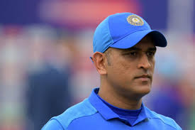
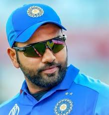
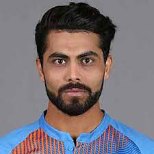

Achivement and Awards: 1. Arjuna Award (2013) 2. Padma Shri (2017) 3. Rajiv Gandhi Khel Ratna (2018) 4. ICC Cricketer of the Year (2017, 2018) 6. ICC ODI Cricketer of the Year (2012, 2017, 2018) 7. Padma Bhushan (2018)
Beyond his awards, Kohli holds numerous records in international cricket, including the fastest player to score 8,000, 9,000, 10,000, 11,000, and 12,000 runs in One Day Internationals (ODIs).He has also achieved several records for the fastest centuries and most centuries in successful ODI run-chases. Apart from his cricketing prowess, Virat Kohli is known for his philanthropic work and advocacy for fitness and a healthy lifestyle. His passion for the game and commitment to excellence have made him a role model for aspiring cricketers and a beloved figure among fans worldwide.
M.S DHONI

Mahendra Singh Dhoni, born on July 7, 1981, in Ranchi, India, is a former Indian cricketer and one of the most successful captains in the history of Indian cricket. Dhoni's cricketing journey began as a talented wicketkeeper-batsman in his hometown, and he made his international debut for India in 2004. He quickly rose to prominence with his fearless batting style, calm demeanor, and exceptional leadership qualities. MS Dhoni's captaincy tenure was remarkable, leading India to numerous achievements, including winning the inaugural ICC T20 World Cup in 2007, ICC Cricket World Cup in 2011 and ICC Champions Trophy in 2013. He was known for his astute decision-making and the ability to handle high-pressure situations with composure.
Achivement and Awards: 1. Rajiv Gandhi Khel Ratna (2007) 2. Padma Shri (2009) 3. Padma Bhushan (2018)
Apart from the awards, MS Dhoni also holds several records in international cricket. He was known for his finishing abilities in One Day Internationals (ODIs) and became one of the most successful captains in limited-overs cricket.Dhoni's contribution to Indian cricket goes beyond his individual achievements. His leadership and impact on young cricketers have been instrumental in shaping the future of Indian cricket. He is often credited with instilling a winning mentality and fostering a sense of unity among the team members. After retiring from international cricket in August 2020, Dhoni continued to be associated with the sport as a mentor and captain of the Chennai Super Kings in the Indian Premier League (IPL). Mahendra Singh Dhoni's incredible journey and achievements have made him an iconic figure and one of India's most beloved cricketers
SACHIN TENDULKAR
Sachin Tendulkar, often referred to as the "Master Blaster" or "Little Master," is a legendary cricketer from India. Born on April 24, 1973, in Mumbai, he is considered one of the greatest batsmen in the history of cricket. Tendulkar made his international debut at the age of 16 in 1989, representing India in Test matches. He went on to have an illustrious career that spanned over two decades, retiring in 2013. Sachin is the highest run-scorer in both Test and One Day International (ODI) cricket. hroughout his career, Tendulkar achieved numerous records and milestones, including being the first player to score 100 international centuries.
Achivement and Awards: 1. Rajiv Gandhi Khel Ratna 2. Padma Shri 3. Arjun award (2018)
Sachin's incredible cricketing skills, technique, and passion for the sport earned him a massive fan following not only in India but worldwide. His humility and sportsmanship on and off the field have made him an iconic figure and a role model for aspiring cricketers. after retirement, Tendulkar remained involved in cricket and various philanthropic activities. His contributions to the game and society have left an indelible mark, making him a true cricketing legend and a national hero in India.
ROHIT SHARMA

Rohit Sharma, born on April 30, 1987, in Nagpur, India, is a prolific Indian cricketer and one of the most successful opening batsmen in limited-overs cricket. Rohit's journey in cricket began at a young age, and he quickly made a name for himself with his elegant stroke play and ability to score big runs. He made his international debut for India in 2007, and over the years, he established himself as a key player in both One Day Internationals (ODIs) and T20 Internationals (T20Is).
Achivement and Awards: 1. Arjuna Award 2. Rajiv Gandhi Khel Ratna (2018)
Rohit Sharma has achieved numerous records in international cricket, especially in the limited-overs formats. He is the only player to have scored three double centuries in ODIs, and he holds the record for the highest individual score in a single ODI inning, which is 264 runs. Rohit has also been an integral part of the Indian cricket team's success in major tournaments, including winning the ICC Cricket World Cup in 2007, the ICC Champions Trophy in 2013, and the ICC T20 World Cup in 2007. In addition to his individual accolades, Rohit Sharma has been a successful captain in the Indian Premier League (IPL). He led the Mumbai Indians franchise to multiple IPL titles, showcasing his leadership skills and tactical acumen. Beyond his cricketing achievements, Rohit Sharma is known for his calm and composed demeanor on the field and his exceptional ability to accelerate the scoring rate during crucial moments of the game.
RAVINDRA JADEJA

Ravindra Jadeja, also known as "Sir Jadeja" or "Jaddu," is an Indian cricketer known for his all-round abilities. He was born on December 6, 1988, in Navagam, Gujarat, India. Jadeja made his debut for the Indian national cricket team in 2009 and has since become an integral part of the squad.
Achivement and Awards: 1. ICC Awards 2. Arjuna Award 3. Top-Ranked Test Bowler 4. Sir Garfield Sobers Trophy 5. Consistent All-Rounder:
Jadeja's aggressive fielding and athletic abilities have earned him the reputation of being one of the best fielders in world cricket. He is often seen making vital contributions on the field, taking stunning catches and affecting run-outs. Over the years, Ravindra Jadeja has established himself as a match-winner for the Indian cricket team and has played a pivotal role in numerous victories. His passion for the game, work ethic, and unwavering determination have made him a beloved figure among cricket fans in India and around the world..